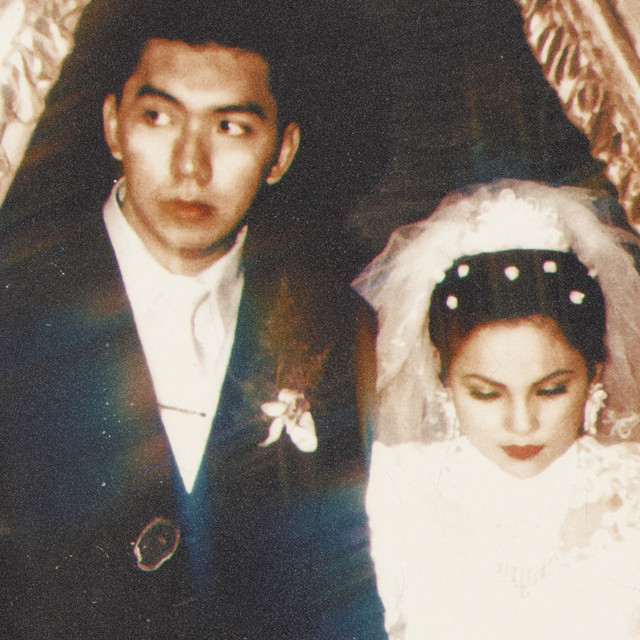

|

Bila - Aku Jeje
Sudah di ujung kisah
Ia masih di sana
Menunggu dan berharap
Engkau datang menjawab
Masih selalu tertawa
Meski hatinya hampa
Doa yang masih sama
Di setiap harinya
Bila nantinya
Semua kembali bersama
Rayakanlah secara sederhana
Bermain dengan
Rintik-rintik favoritmu
Memaafkan semua yang telah berlalu
Bila nantinya
Semua kembali bersama
Berbahagialah selama-lamanya
Bermain
Rintik-rintik favoritmu
Memaafkan semua yang telah berlalu
Kembalilah
Menetaplah
Selamanya
|
Tautan Eksternal
- Website Sabilly
- Wikipedia
- W3School
|